Thank you for purchasing my theme. If you have any questions that are beyond the scope of this help file, please feel free to open a new ticket at our support forum
Before beginning the installation and configuring of your new theme, you must have wordpress installed. If you need to install WordPress then please visit: http://wordpress.org/download/. If you need any help with the installation, please refer to this guide: http://codex.wordpress.org/Installing_WordPress.
Here is a brief step by step on how to install WordPress:
- Download and unzip the WordPress package if you haven't already.
- Create a database for WordPress on your web server, as well as a MySQL user who has all privileges for accessing and modifying it.
- Upload the WordPress files in the desired location on your web server:
- If you want to integrate WordPress into the root of your domain (e.g. http://example.com/), move or upload all contents of the unzipped WordPress directory (but excluding the directory itself) into the root directory of your web server.
- If you want to have your WordPress installation in its own subdirectory on your web site (e.g. http://example.com/blog/), create the blog directory on your server and upload WordPress to the directory via FTP. Note: If your FTP client has an option to convert file names to lower case, make sure it's disabled.
- Run the WordPress installation script by accessing wp-admin/install.php in a web browser.
- If you installed WordPress in the root directory, you should visit: http://example.com/wp-admin/install.php
- If you installed WordPress in its own subdirectory called blog, for example, you should visit: http://example.com/blog/wp-admin/install.php
You can do it in two ways:
-
FTP Upload:
- Open up your FTP manager and connect to your hosting
- Browse to wp-content/themes
- Upload the vromon theme folder.
- Log Into WordPress and go to Appearance - Themes
- Find the vromon and click activate
-
WordPress Upload
- Navigate to Appearance Add New Themes Upload.
- Follow the instructions on the screen, select the downloaded theme folder (“vromon.zip”).
- Hit Install Now and the theme will be uploaded and installed.
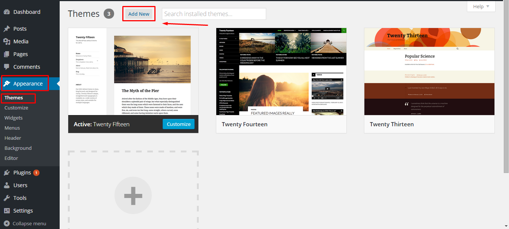
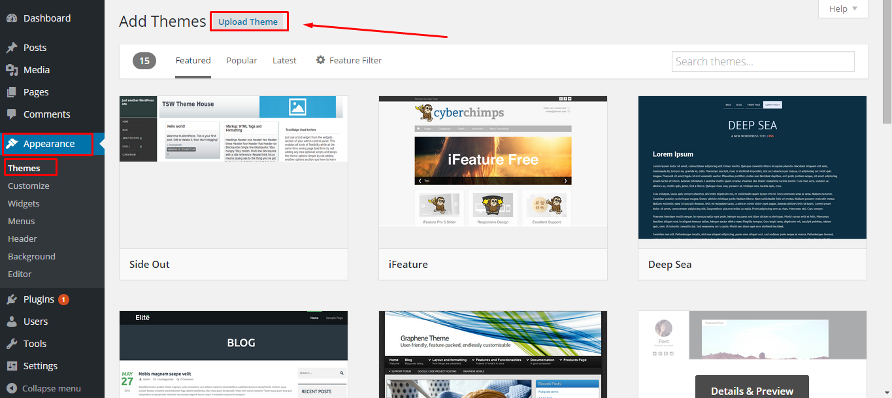
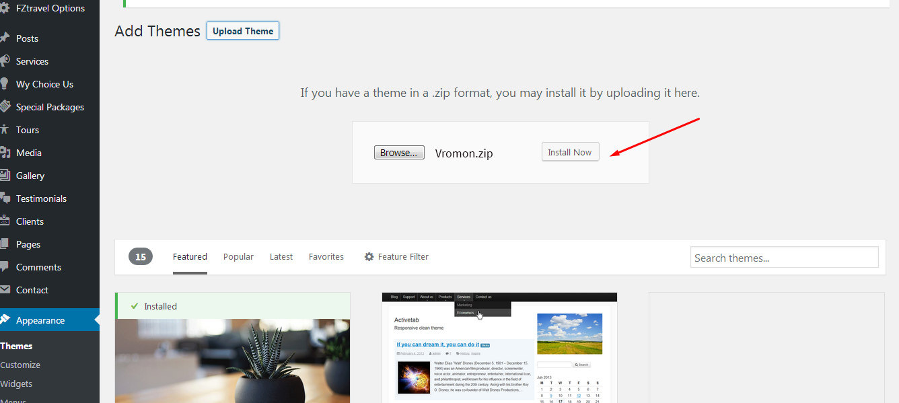
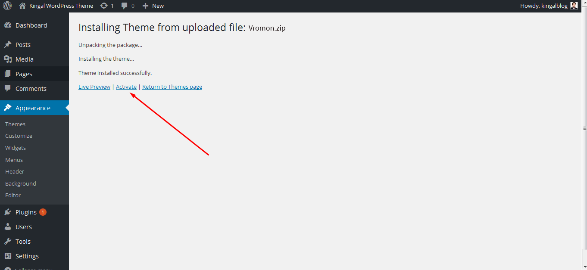
We always add new fixes , features and improvements over time to our theme . There is no risk on losing your settings and pages. However if you had done modifictations on theme files, then they will be lost.
- First of all you need to download the latest copy of vromon Theme.
- There are two method of installing the latest theme .
- Update via wordpress:Deactivate your existing theme and delete it , now upload the latest theme again under the ( Wordpress admin panel -> themes -> upload ) and activate it
- Update via FTP Go to “wordpress installtion directory -> wp-content > themes” location and backup your “vromon” theme folder by saving it to your computer, or you can choose to simply delete it. Your content will not be lost. Then upload into “wp-content > themes” location.you can replace the previous theme with the current one if you did not delete it.
Note: Please take a backup of your database before updating your theme.
When you have successfully installed the theme , you will be asked to install the required plugins.
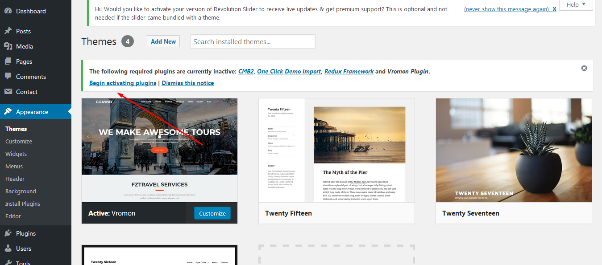
Then click on the begin installing plugins , choose the plugins you want to install or select all and then click install. After Installaling the plugins, go back to "Install Plugins" option from left side and activate the plugins.
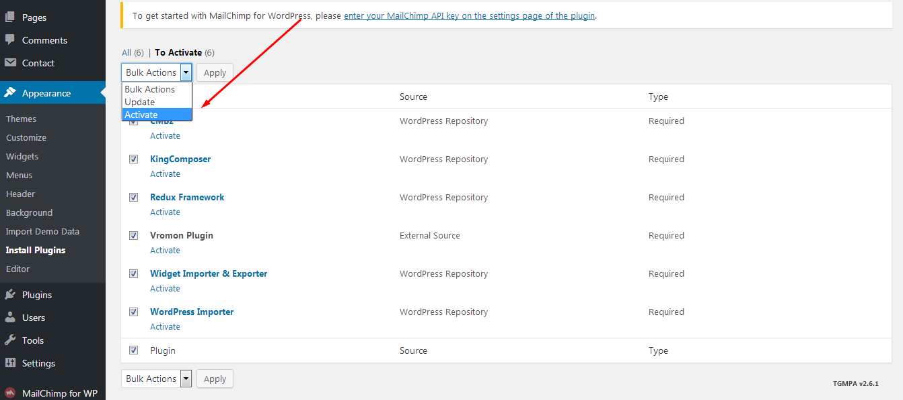
Create a page for Home and Blog page. Go to Setting Reading. Then select the page for Front and Posts page.
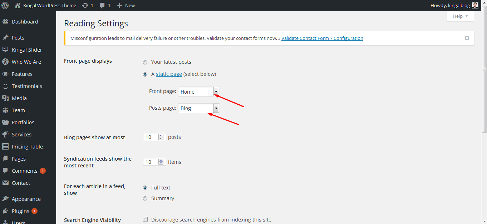
You can set your Logo, style (font color, background color), copyright Text etc
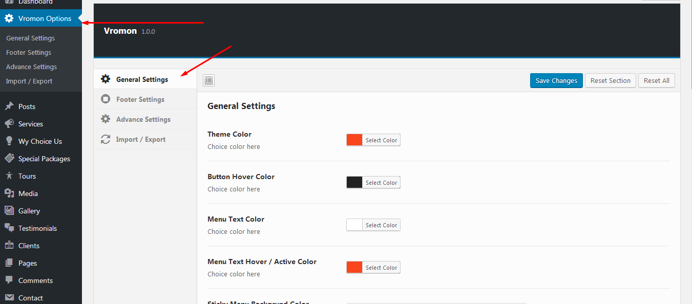
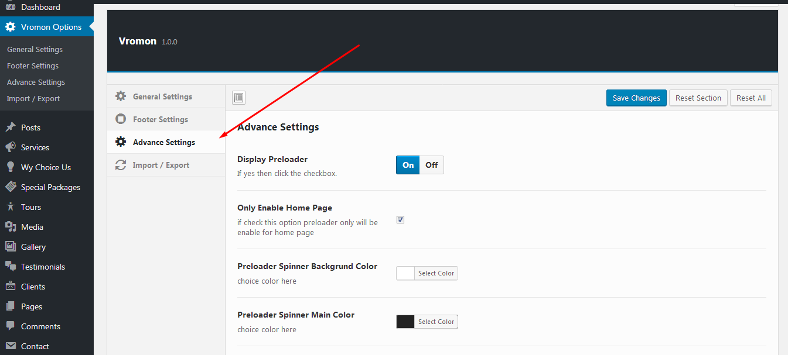
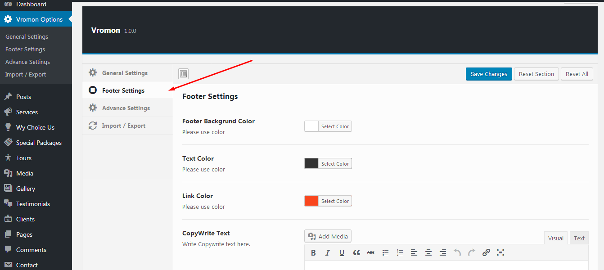
Both the theme content and theme options have been provided so that you can set up the theme to look exactly like the our demo in a few minutes. You can find that inside "Demodata" folder. Import The .xml through the WordPress import tool, which can be found in Tools > Import > WordPress. Follow the steps to import the demo content and leave the final page to load with a confirmation that the content has been imported successfully (this may take some time).
Please install all the required plugins before importing the demodata content.
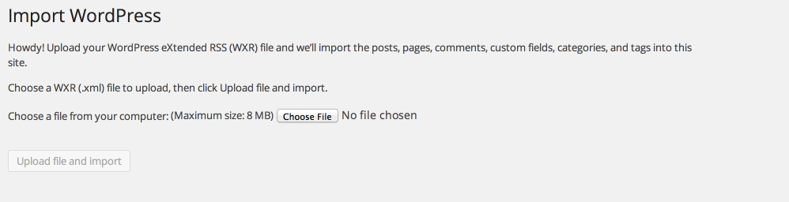
Connect with Mailchimp
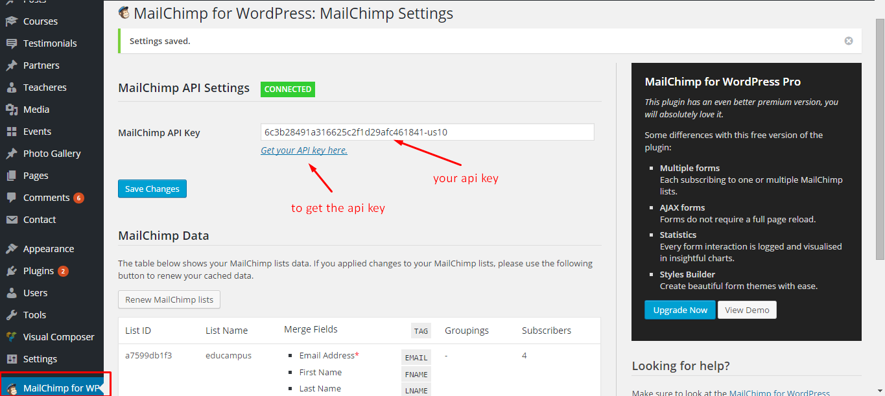
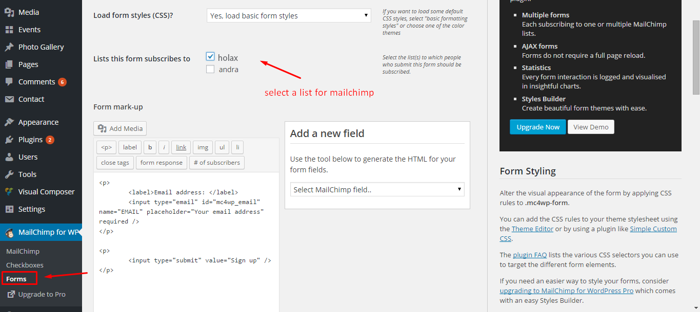
We have provided a child theme package ready for you to use if you wish to make changes to files, while keeping them through updates. The child theme is included within the main download folder, and is named "vromon-child" all you need to do is upload this as well as the standard "vromon" folder, and then activate the child theme in Appearance > Themes from the WordPress menu.
Once Again Thankyou for for purchasing one of our theme
Best Regards
Theme Ocean